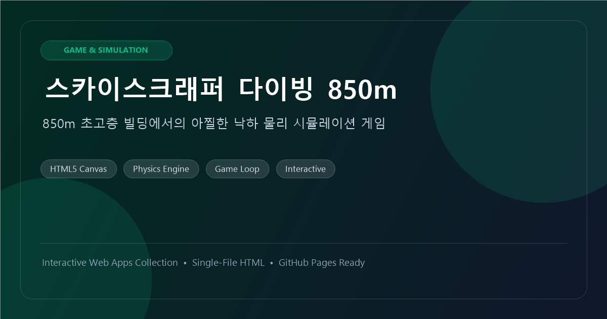
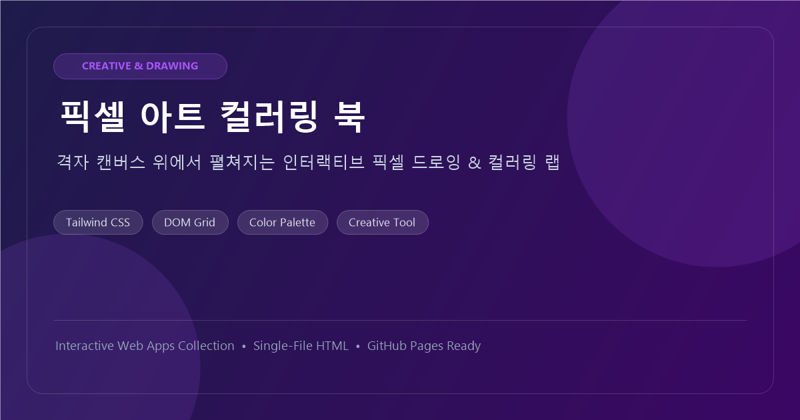
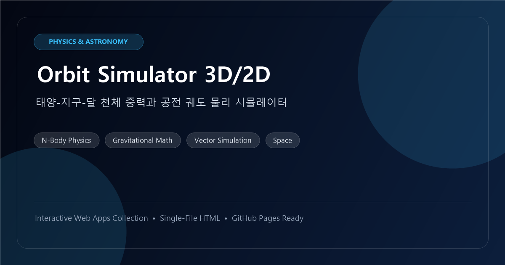
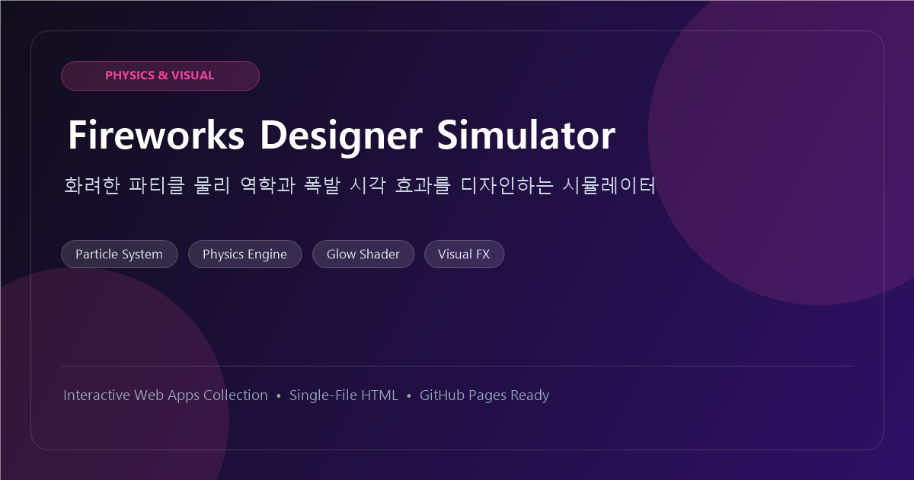
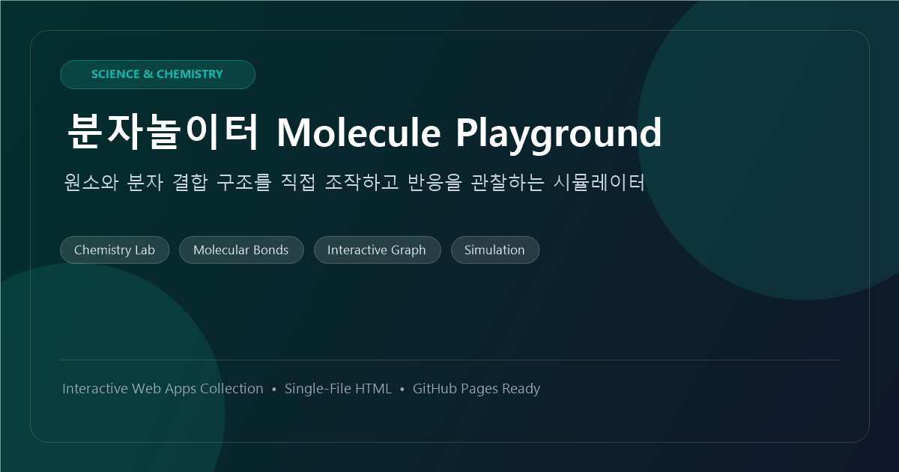
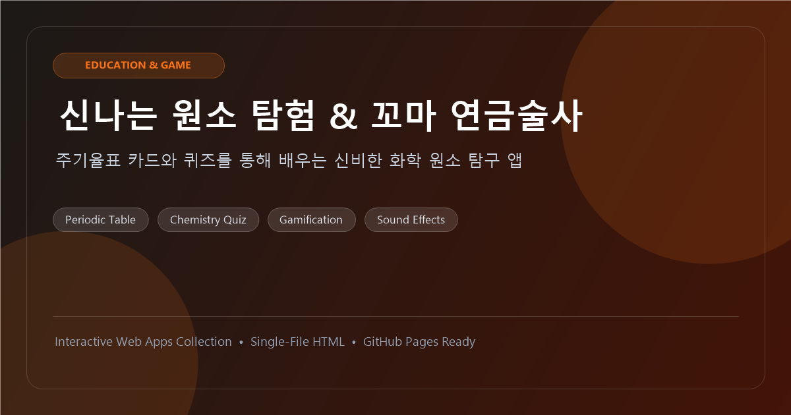
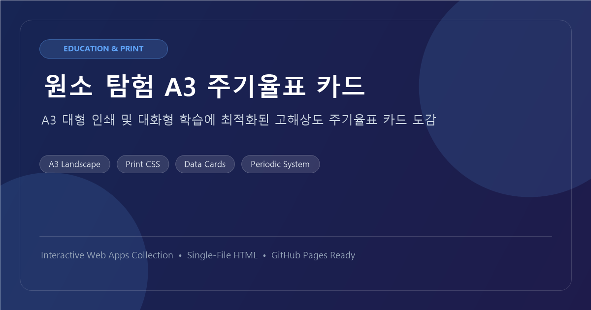

🎮 게임 & 시뮬레이션스카이스크래퍼 다이빙 850m
850m 초고층 빌딩에서의 아찔한 낙하 물리 시뮬레이션 게임. 타이밍과 낙하 제어를 시험해보세요.
#Canvas2D
#PhysicsEngine
#GameLoop
별도의 설치나 백엔드 서버 없이 브라우저에서 즉시 실행되는 7개의 독립형(Single-File) 웹 애플리케이션 쇼케이스입니다.

🎮 게임 & 시뮬레이션850m 초고층 빌딩에서의 아찔한 낙하 물리 시뮬레이션 게임. 타이밍과 낙하 제어를 시험해보세요.

🎨 크리에이티브 & 아트격자 캔버스 위에서 펼쳐지는 인터랙티브 픽셀 드로잉 도구. 나만의 도트 그래픽을 색칠하고 완성하세요.

🪐 물리 & 천체 시뮬레이션태양-지구-달의 만유인력과 공전 궤도 방정식을 정밀하게 계산하는 천체물리학 시뮬레이터입니다.

🎆 파티클 & 비주얼 랩중력, 저항, 광채 효과를 커스텀하여 밤하늘을 수놓는 화려한 불꽃놀이 파티클 연출 랩입니다.

🧪 화학 & 분자 결합원소를 배치하고 화학 결합을 형성하며 분자 구조의 안정성과 결합 원리를 탐구합니다.

🚀 교육 & 게임화주기율표 카드와 퀴즈를 통해 재미있게 원소를 발견하고 연금술을 완성하는 인터랙티브 교육 게임입니다.

📚 교육 & 도감 뷰어A3 대형 인쇄 출력 및 대화형 카드 학습에 최적화된 고해상도 주기율표 시각 도감 뷰어입니다.
검색 결과가 없습니다.
다른 검색어나 카테고리를 선택해 보세요.
별도의 백엔드 서버나 복잡한 빌드 과정 없이, 브라우저만 있으면 언제 어디서나 즉시 실행됩니다.
각 앱은 HTML, CSS, JavaScript가 단일 파일에 내장되어 다운로드나 공유가 매우 간편합니다.
Open Graph 메타데이터, Favicon, 반응형 네비게이션이 완비되어 배포 즉시 라이브 데모 웹사이트가 완성됩니다.